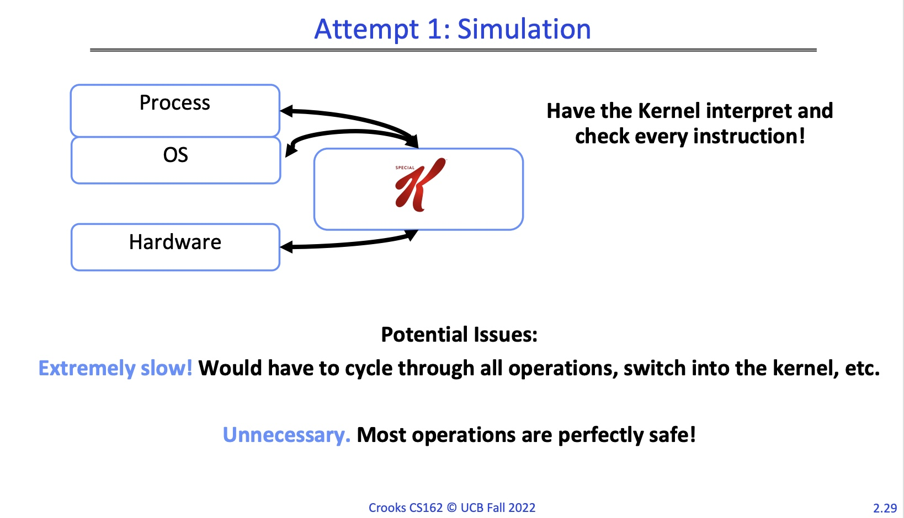

Computer Science 162: Operating Systems
Home
Operating System Overview
Why OS:
Every device runs an operating system. Every program ever runs on an operating system. Performance and execution behavior will depend on the operating system.
Operating Systems are becoming largely more complex. This is due to hardware becoming smarter, need for better reliability and security, need for better performance(efficient code/parallel code), and need for better energy usage.
What OS:
Operating: manages multiple tasks and users.
System: a set of interconnected components with an expected behavior observed at the interface with its environment.
Operating System(v1): an operating system is the layer of software that interfaces between(diverse) hardware resources and the (many) applications running on the machine.
Operating System(v2): an operating system implements a virtual machine for the application whose interface is more convenient than the raw hardware interface(convenint = security, reliability, portability).
Three Main Hats:
Referee: manage protection, isolation, and sharing of resources
Illusionist: provide clean, easy-to-use abstractions of physical resources
Glue: provides a set of common services
OS as referee:
Allow multiple(untrusted) applications to run concurrently.
Fault Isolation: Isolate programs from each other. Isolate OS from other programs. Concepts: process and dual mode execution
Resource Sharing: How to choose which task to run next? How to split physical resources? Concepts: scheduling
Communication: How can OS support communication to share results? Concepts: Pipes/Sockets
OS as illusionist:
Mask the restrictions inherent in computer hardware through virtualization.
All alone: provide abstraction that application has exclusive use of resources.
All powerful: provide abstraction that hardware resources are infinite.
All expressive: provide abstraction of hardware capabilities that are not physically present.
OS as glue:
Provide set of common standard services to applications to simplify and regularize their design.
Make Sharing Easier: simpler if all assume same basic primitives.
Minimize reuse: avoid re-implementing functionality from scratch. Evolve components independently.
Putting it All Together:
Definitions:
Overhead: added resource cost of implementing an abstraction
Fairness: How "well" are resources distributed across applications
Response Time: how long does it take for a task to complete
Throughput: rate at which group of tasks can be completed
Predictability: are performance metrics constant over time
Availability: mean time to failure + mean time to repair
Integrity: computer's operation cannot be compromised by a malicious attacker
Privacy: data stored on computer accessible to authorized users
Enforcement Policy: How the OS ensures only permitted actions are allowed
Security Policy: What is permitted
OS Evaluations Criteria:
Performance: OS must implement the abstraction efficiently, with low overhead and equitably. Related: overhead, fairness, response time, throughput, predictability
Reliability: system does what it is supposed to do-- OS failures are catastrophic. Related: availability
Security: minimize vulnerability to attack. Related: integrity, privacy, enforcement policy, security policy
Portability: a portable abstraction does not change as the hardware changes. Can't rewrite application(or OS) every time, must plan for hardware that does not exist yet.
Protection: Processes and Kernels
The OS system implements a virtual machine for the application whose interface is more convenient than the raw hardware interface. Convenient = security, reliability, portability.
Mechanisms vs Policy:
Mechanism: Lowe-level methods or protocols that implement a needed piece of functionality.(e.g. A brake pedal)
Policy: Algorithms for making decisions wihtin the OS. Use the mechanism. (e.g. "I break when I see a stop sign")
Requirements for Virtualization:
Protection is necessary to preserve the virtualization abstraction. Protect application from other application's code. Protect OS from the application. Protect applications against inequitable resource utilisation.
What is a process?:
A process is an instance of a running program. Which has access to:
CPU, Memory(store code, data, stack, heap), registers(PC, SP, regular registers), IO information(open files, etc).

When a process is in the running state it is in the CPU. Blocked and Ready processes are distinguished so that processes waiting on IO aren't rescheduled.
Process Management:
Process Control Block: in OS stores necessary metadata-- pc, stack ptr, registers, PID, UID, list of open files, process state, etc.
Process List: stores all processes. Run Queues: List all PCBs in Ready state. Wait Queues: lists all PCBs in blocked state
OS Kernel:
Lowest level of OS running on system. Kernel is trusted with full access to all hardware capabilities. All other software(OS or applications) is considered untrusted.
The Kernel has full access to keep it simple and small is security. This is the principle of lowest access, keep entities with as little access as possible.
Process Refined: an executing program with restricted rights. Processes are boxed in with the OS and Hardware and the kernel is the door. Enforcing mechanism must not hinder functionality or hurt performance.
User Mode vs Kernel Mode:
Application/User Code(untrusted): run all the processor with all potentially dangerous operations disabled.
Kernel Code(trusted): runs directly on processor with unlimited rights. Performs any hardware operations.
How can the kernel enforce restricted rights?:
Attempt 1: Simulation

Attempt 2: Dual Mode Operation


Privileged Instructions: cannot change privilege level, cannot change address space, cannot disable interrupts, cannot perform IO operations, cannot halt the processor. So what can an application due? Asks for permission to access kernel mode. System calls Transition from user to kernel mode only at specific locations specified by the OS. Exceptsions User mode attempts to execute a privileged exception. Generates a processor exception which passes control to kernel at specific locations.
Memory Protection: OS and application both resident in memory, application should not read/write kernel memory(or other apps memory).
How do we achieve memory isolation?
Attempt 1: Isolation
Hardware to the rescue-- base and bound registers. If memory reference was in between the base and bound reference it was 'ok' otherwise an exception is thrown. Limitations: static memory allocation, cannot share memory between processes, location of code & data determined at runtime, cannot relocate/move programs leads to fragmentation.
Attempt 2: Virtualization
Virtual Address space-- set of memory address that process can "touch". Physical address space-- set of memory addresses supported by hardware. Map from virtual addresses to physical address through address translation. Benefits: whole space of virtual address space even physical address not resident in memory, same virtual address can map to same physical address, every process's memory always starts at 0, can dynamically change mapping of virtual to physical addresses.